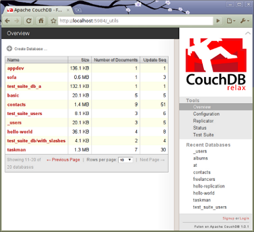

A fejlesztői és futtató környezet létrehozása
A CouchDB installálása
A munkához mindenek előtt szükségünk van egy működő CouchDB serverre
Ehhez a legegyszerűbben úgy juthatunk hozzá, hogy létrehozunk egy saját, ingyenesen használható példányt a CouchOneHosting oldalán.
Ha saját, lokális példányt kívánunk futtatni, akkor a legegyszerűbb, ha az előre legyártott, bináris verziót töltjük le, és rakjuk fel a saját gépünkre. A megfelelő platformhoz legyártott, azonnal installálható verziók a CouchOneProducts oldalán keresztül érhetők el.
Ha forrásból kívánjuk reprodukálni a teljes rendszert, akkor ehhez a megfelelő verzió forráskódját a project download oldaláról tudjuk megszerezni. Ehhez azonban az Erlang fordítóra, és számos egyéb kiegészítő könyvtárra is szükség van. Melyek platformról-platformra eltérő előkészítést igényelnek. Ráadásul egy adott platform különböző verziói között is vannak eltérések, a fordító környezet kialakítását illetően. Ezért mindenképpen a bináris, előre lefordított változattal célszerű először próbálkozni.
Például Ubuntu 10.04-en, a CouchOne oldaláról letöltött CouchOne for Ubuntu, all inclusive and ready to go binaries verzió minden gond nélkül feltelepíthető. Ehhez mindössze el kell indítanunk az előzőleg letöltött install-couchdb-1.0.1_rel1-linux.bin nevű file-t.
Az installálás során létre kell jönnie egy couchdb nevű user-nek.
Ezt követően a server az alábbi paranccsal indítható el:
sudo -i -u couchdb couchdb
Erre a server valami hasonlót ír ki a konzolra (a konfigurációs lista a rövidített példánál lényegesen hosszabb lehet):
Apache CouchDB 1.0.1 (LogLevel=debug) is starting.
Configuration Settings ["/usr/local/etc/couchdb/default.ini",
"/usr/local/etc/couchdb/local.ini"]:
[couchdb] database_dir="/usr/local/var/lib/couchdb"
[couchdb] max_attachment_chunk_size="4294967296"
[couchdb] max_dbs_open="100"
[couchdb] max_document_size="4294967296"
...
Apache CouchDB has started. Time to relax.
[info] [<0.33.0>] Apache CouchDB has started on http://127.0.0.1:5984/
Ezután már megszólíthatjuk az adatbáziskezelőt, hogy ellenőrizzük, minden rendeltetésszerűen működik-e. Ezt megtehetjük egy böngészővel, vagy a curl segédprogrammal, a következő paranccsal:
curl -X GET http://localhost:5984/
Az URL-ből látható, hogy a CouchDB alapértelmezésben a 5984-es porton figyel. válaszképpen az alábbi JSON dokumentumot kell kapnunk:
{"couchdb":"Welcome","version":"1.0.1"}
A CouchDB adminisztrációs felületét, melyet Futon-nak hívnak a következő URL-en keresztül érhetjük el egy böngészővel:
http://localhost:5984/_utils
A böngészőben az ábrán láthatóhoz hasonlót kell látnunk:

Miután rendelkezünk egy megfelelően működő CouchDB adatbáziskezelő serverrel, hozzáfoghatunk az adatbázis feltöltéséhez. Ez a közönséges adatokon kívül a kliens oldalon megjelenítendő web-es tartalmak (HTML, CSS, stb.), továbbá a server oldali alkalmazások feltöltését is jelenti.
Ez azért lehetséges, mert a CouchDB számára a web-es alkalmazások éppen olyan dokumentumok, mint bármi más, közönséges tartalom.
A programokat egy speciális (_design/) mintázattal kezdődő nevű dokumentumban tárolja az adatbáziskezelő, JSON formátumban.
A _design dokumentumokat létrehozhatjuk a Futon-nal, és a kódot begépelhetjük az adminisztrációs felületen keresztül, melyet a web-es felület biztosít számunkra. Ez azonban nagyobb programok esetében nem a legoptimálisabb, és legkényelmesebb megoldás.
A programok általában többféle formátumban, számos forráskód file létrehozásával készülnek. Ezek szerkesztéséhez speciális fejlesztői környezetek támogatását tudjuk igénybe venni syntax highlite-tal, beépített verzió követő támogatással, és számos egyéb funkcióval.
A CouchDB-hez készült egy segédeszköz, ami lehetővé teszi, hogy a megszokott eszközeinkkel készítsük el a forrás file-jainkat (HTML, CSS, JavaScript, stb.) Majd ezeket feltöltsük a serverre.
Erre a célra használható a CouchApp nevű segédeszköz, amire a továbbiak során a fejlesztéshez szükségünk lesz.
A CouchApp egyebek közt segít minket abban, hogy a HTML5/JavaScript technológiával írt alkalmazásainkat a CouchDB által elvárt strutúrában, és JSON-ná konvertálva egyetlen parancs végrehajtásával tölthessük fel. Ezen felül JavaScript könyvtárakat biztosít a kliens oldalon az általunk írandó programok számára, hogy azok egyszerűbben elérhessék a servert, a server oldalon pedig ahhoz, hogy kiszolgáljuk a beérkező kéréseket, lekérdezéseket hajthassunk végre.
A soron következő lépés tehát a CouchApp installálása.
A CouchApp installálása
A CouchApp alkalmazást legegyszerűbben a Python easy_install scriptjével installálhatjuk, amely a setuptools csomag része. Amennyiben ez nincs rajta a gépünkön, akkor előzetesen gondoskodni kell annak meglétéről.
Például Ubuntu-n az alábbi paranccsal installálhatjuk:
sudo apt-get install python-setuptools
Miután az easy_install-t sikeresen telepítettük, hajtsuk végre a következő parancsot:
sudo easy_install -U couchapp
Próbaképpen hajtsuk végre a következő parancsot:
couchapp version
A válasznak a következőhöz hasonlónak kell lennie:
Couchapp (version 0.7.0)
Copyright 2008-2010 Benoît Chesneau <benoitc@e-engura.org>
Licensed under the Apache License, Version 2.0.
Ha sikertelen volt az installáció, annak egyik gyakori oka lehet, hogy nem megfelelő verziójú komponensek vannak a gépünkön. Ilyenkor megpróbálkozhatunk a következő parancsokkal upgrade-elni mind a setuptools, mind pedig a couchapp alkalmazást:
sudo easy_install -U setuptools
sudo easy_install -U couchapp
Ha ez is sikertelen volt, akkor a Python setuptools oldalon, illetve a CoucApp levelező listán próbálhatunk további segítséghez jutni.